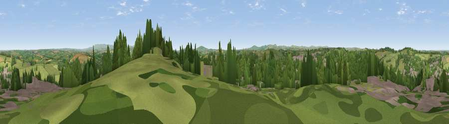

Viewpoint near Launceston
#15829 in England · top 28% of its area beats it · near LauncestonThe view, rendered

A 360° render of this exact spot computed from the terrain model, tree cover and land cover — summer colours, afternoon light, calibrated against photographs of famous viewpoints. Real trees, hedges and buildings will differ in detail.
The panorama
Grey silhouette: terrain skyline in each direction (720 bearings, Earth curvature and refraction included). Dashed green: skyline with trees (+15 m) and buildings (+8 m) as obstacles. Blue strip: how far the ground is visible on each bearing.
Where the view opens
Wedge length = distance to the farthest visible ground on that bearing (vegetation-aware). Rings at 10, 25 and 50 km.
What fills the view
54% grassland · 25% woodland · 18% built-up · 3% cropland
Angular shares of the visible panorama (visual magnitude), not map area. Landscape diversity 0.48 (0–1 Shannon).
Key numbers
More beautiful places nearby
The staircase of upgrades: each row has a higher view potential than everything closer. Driving times are estimates from straight-line distance, calibrated against real road routing — check an actual route before setting out.
| Place | Direction | Drive | Score |
|---|---|---|---|
| Viewpoint near Egloskerry | WNW · 5 km | ~10 min | 57.3 |
| Larrick Hill | SSW · 6 km | ~13 min | 60.1 |
| Viewpoint near Tinhay | E · 6 km | ~13 min | 61.3 |
| Viewpoint near Bradstone | SE · 7 km | ~14 min | 64.1 |
| Viewpoint near Chillaton | ESE · 9 km | ~18 min | 65.2 |
| Viewpoint near North Hill | SW · 11 km | ~21 min | 68.6 |
| Viewpoint near Henwood | SW · 12 km | ~23 min | 76.2 |
| Kit Hill | SSE · 14 km | ~25 min | 80.3 |
50.63337, -4.35892 · source: screening · position refined by local search. Computed location — check access rights before visiting.